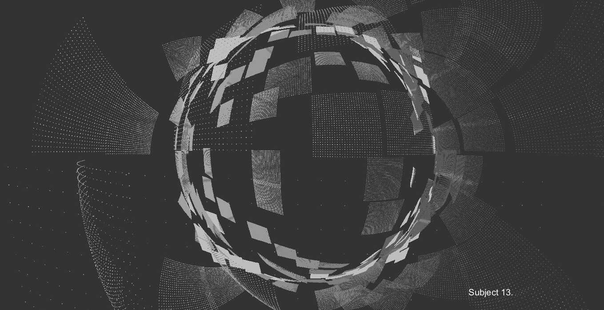
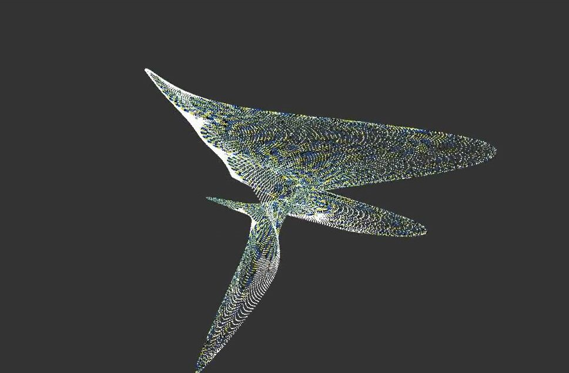
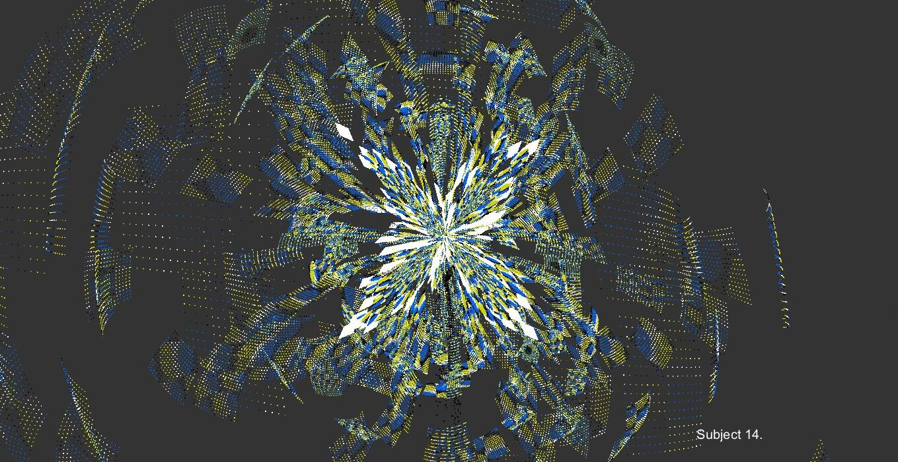
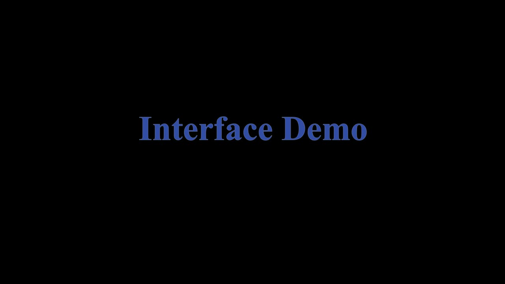
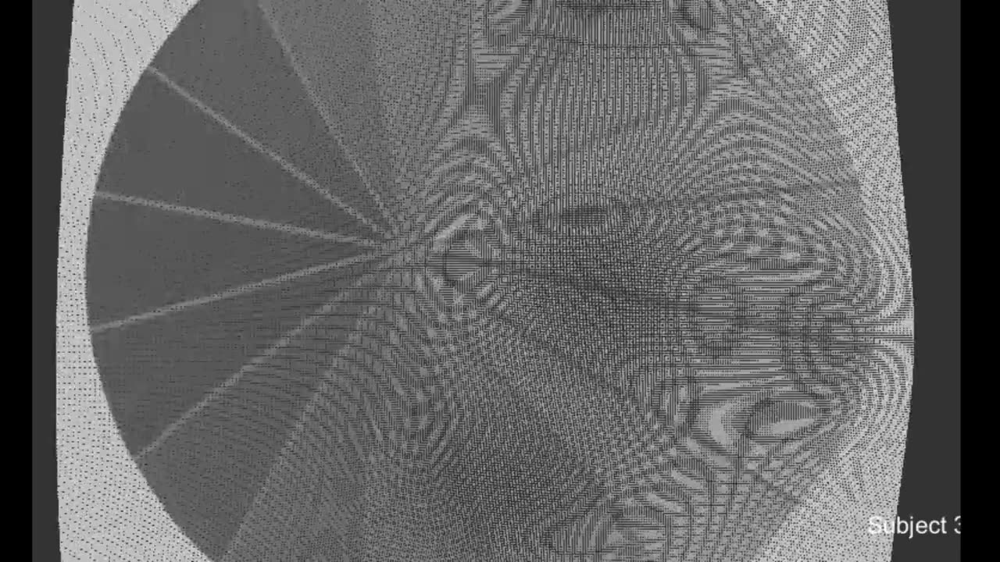

Creating Interactive Audio-Visual Works Based on Visual Perception Data
Creating Interactive Audio-Visual Works Based on Visual Perception Data
Lena Mathew - University of California, Santa Barbara
1. PubPub LINK
https://nime.pubpub.org/pub/vcqarly4/draft?access=ivymixqd
2. ABSTRACT
An immersive audio/visual application or installation, which uses visual perception through a bespoke interface to create sound and visual objects is presented. These objects are derived from Visual evoked potentials (VEPs), which are changes in brainwave activity that are created when a visual stimulus is presented to an observer during an experiment. Here, VEPs are generated by observing optical illusions, which are brought into an environment as 3-D sound and visual objects. The VEP objects can be played as an expressive instrument via a user controlled interface through parameter controls, creating evolving, dynamic sounds and visuals.
The multimodal design of this expressive instrument includes VEP data and user interaction. Sonification of the VEP data uses the granular synthesis method, which breaks up the VEP signal into small grains and recombines them in real-time. For a brief overview and methodology of this research, go to: https://drive.google.com/file/d/1-v4uQ_cDKI5Mk9e_E-7oyE2CXVSJ1beX/view?usp=sharing.
The overall goal of this work is to offer pathways within the field of human computer interaction by using sensory based methods of interfacing with computer systems that aim to amplifying human qualities by creating art with them.
The demo for this work-in-progress includes a performance in the form of a video of a user manipulation of these VEP-data in the form of sound objects through parameter controls in the interface that generates a layered sound for each channel of data, which is sent to eight output channels. The visualization are controlled by the sound objects through special mapping.
3. PROGRAM NOTES
A description and video documentation of an Audio/Visual interface that uses Visual Evoked Potentials (VEPs) obtained during an experiment as sound and visual objects for composition purposes are presented.
4. MEDIA


A VEP Visualization


A VEP Visualization (b)


A VEP Visualization (c)

▶Interface Demo

▶A Performance
5. ACKNOWLEDGEMENTS
The author would like to thank those who participated in the experiment. Also thanks to Susie Green and Tornike Karchkhadze for their valuable input and contribution to this project.